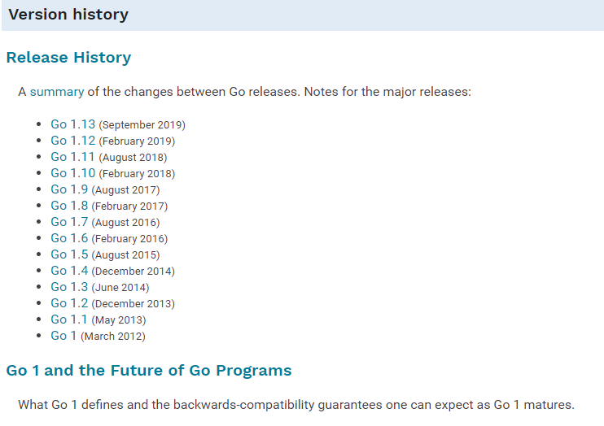
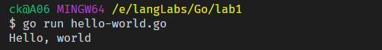
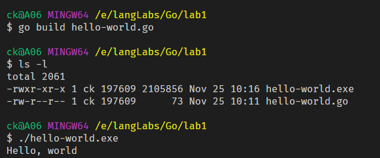
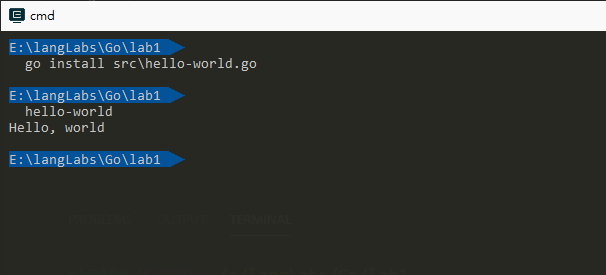
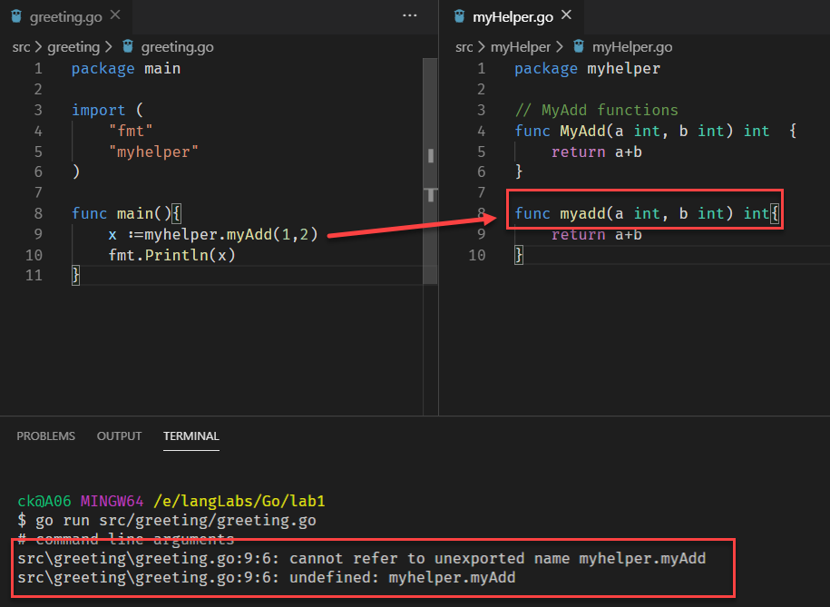
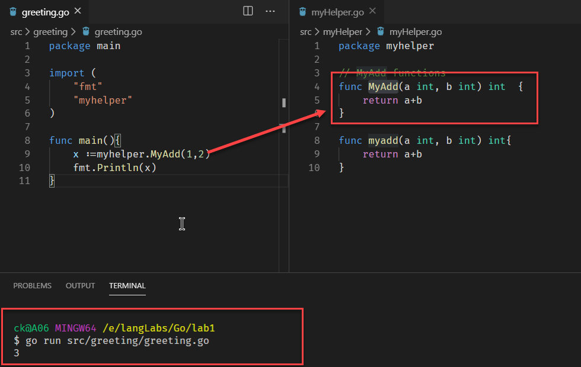
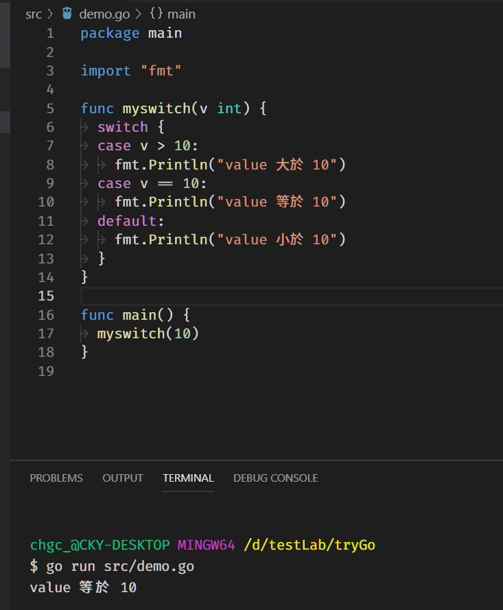
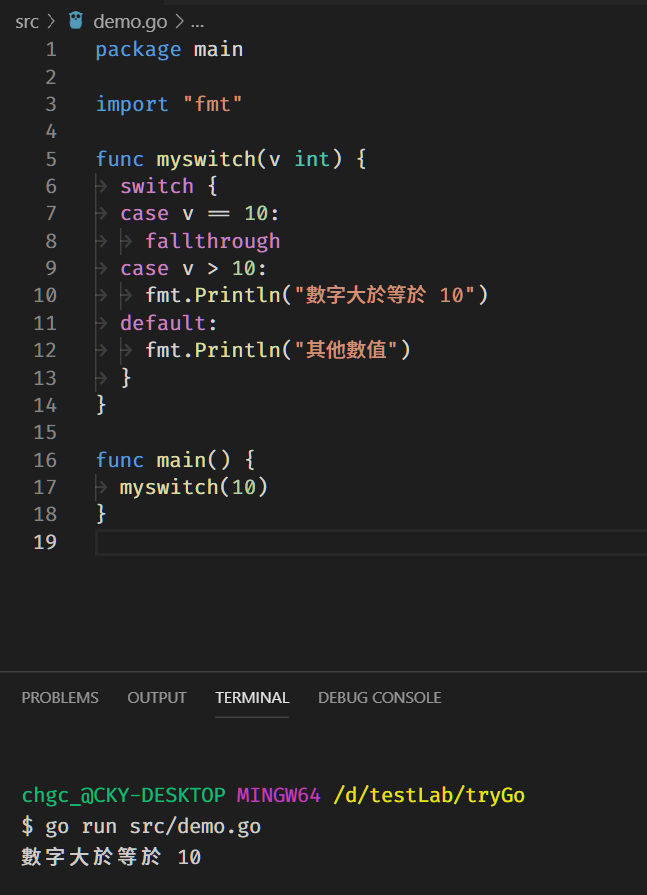
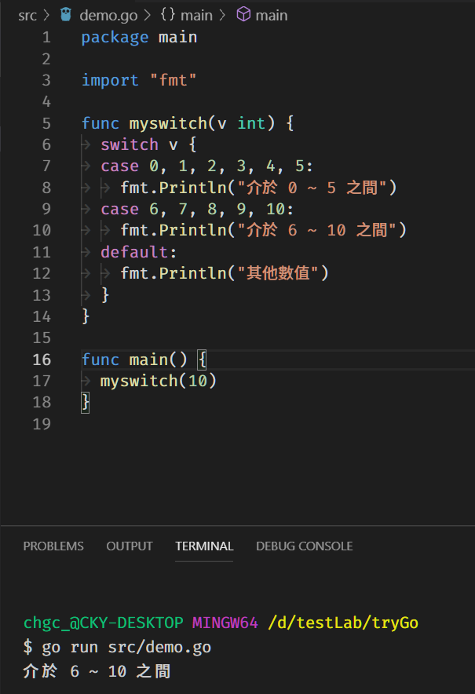
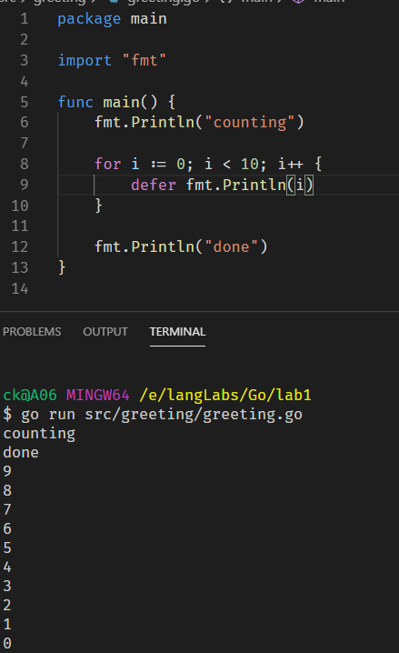

Go 這語言出來也好一段時間了，由於本身後端都是用 C# 在開發，一直都沒有很大的動機學習另外一個後端語言。趁著這次 GDG 台中 12 月份的大活動，來學習一波 Go 吧
歷史
Go 是由 Google 和眾多的貢獻者一起發展的開源專案 (BSD-style 授權)

安裝
依官網的安裝文件安裝，基本上是沒有問題的。編輯器的部分可以使用 VS Code + Go 的擴充套建，或是使用JetBrains GoLand 編輯器(商用)
Hello World
第一個 Go 的程式
1 | // hello-world.go |
透過下指令的方式就可以執行 Go 檔案，go run hello.world.go

要將 Go 建置成可以跑執行檔，執行 go build hello.world.go 之後，就可以執行 ./hello-word

如果要將 Go 打包成全域可使用的話，可透過 go install 的語法，但要使用這個前置條件是 GOBIN 的環境變數要設定，windows 就加入一個環境參數 GOBIN 並設定一個資料夾即可

基本語法
packages
go 世界裡，每一個 go 檔案都會歸屬到一個 packages 裡面，就拿上面的 hello-world 來看
1 | package main |
要使用其他 package 就需要透過 import
1 | import ( |
當 package 被 import 時，就可以使用該 package 內第一個為大寫的 functions。換句話說，如果 functions 的名稱第一個是小寫的，就不會被 export 出去

上圖為使用小寫 functions 時會出現的錯誤訊息，當改使用大寫的 functions，則會是這個結果

functions
Go 的 functions 也是要定型別的，只是定型別的順序跟常見的 C# 等語言不太一樣
1 | func add(x int, y int) int { |
型別都定義在後方，當連續的參數都是同一型別時，也可以這樣寫
1 | func add(x, y int) int { |
Go 另外一個比較特別的地方就是 function 允許回傳多個值
1 | func swap(x, y string) (string, string){ |
換另外一種命名方式回傳 (但不太建議這樣子使用)
1 | func split(sum int) (x, y int) { |
variables
可愛的 var 又來了
1 | package main |
設定預設值的方式，就在後面一順序給要的預設值就可以了，Go 會依預設值自行推斷型別
1 | var c, python, java = true, false, "no!" |
另外一種簡化的宣告方式，使用 :=
1 | // 原本的做法 |
basic types
- bool
- string
- int int8 int16 int32 int64
- uint uint8 uint16 uint32 uint64 uintptr
- byte // alias for uint8
- rune // alias for int32, represents a Unicode code point
- float32 float64
- complex64 complex128
defaultValue
各型別如果沒有給予設值的系統預設值為
- string => 「」
- bool => false
- 數字型 => 0
如果要轉型的話，可以這樣子操作 T(v) 會將 value v 轉換成 T 型別
1 | var i int = 42 |
consts
使用 const 宣告常數值，常數值不能使用 := 宣告
1 | const Pi = 3.14 |
流程控制
for
for 迴圈的基本起手式，不需要小括弧，但大括弧是必要的
1 | func main() { |
go 版本的 while，仍是用 for 表示
1 | sum := 1 |
永不停止的寫法，還是用 for
1 | for { |
if
條件判斷應該是最基本的，只是不需要小括弧，但大括弧是必要的
1 | if x < 0 { |
更懶惰但要習慣的寫法是，在 if 內做變數指定
1 | func pow(x, n, lim float64) float64 { |
switch
1 | today := time.Now().Weekday() |
基本 switch case 都會附上 break (預設隱藏)，當然要寫也是可以的，而 case 的條件也可以是 expression，這樣就不局限必須為一個數值之類的，可以是條件、function 的，以下是一些 switch case 不同的寫法
1 | func myswitch(v int) { |

1 | func myswitch(v int) { |

fallthrough: 執行完此 case 後，繼續往下走 switch case 判斷
1 | func myswitch(v int) { |

defer
defer 會等到周圍的 function 都執行完成後，再執行
1 | package main |
既然 defer 會 hold 住 function，那當好幾個 defer 時，又會怎麼執行呢
1 | package main |
輸出結果為

所以 defer 所堆疊起來的 functions，會採後進先出的方式執行，可以讀此文章了解更多